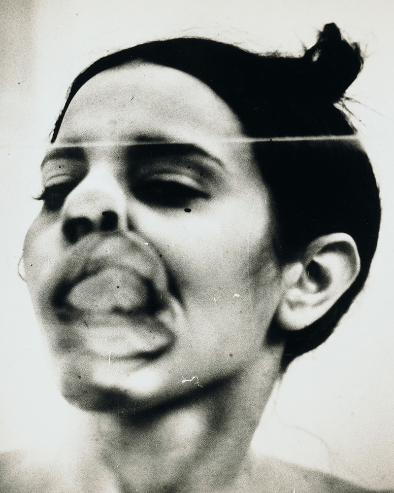

In china, every family typically has at least one stool which serves a range of purposes and that is passed down through each generation.
Crabs
The word for crab, hie xie is a homonym for harmonious, and much bandied about in Chinese government circles.The word is also used on the internet in China, as slang for censorship.
Straight
The work is composed of 150 tons of steel rebar which the artist recovered from the sites of the collapsed schools in sichuan following the quake. ai weiwei has had all of the retrieved metal parts straightened as if new.
Colored Vases 1
A pivotal piece in his iconoclastic oeuvre. Ai dipped earthenware vases into buckets of industrial paint and then let them drip dry.Widely traded for centuries.
Stephen Berks
Pleated Sofa
Using the traditional technique of steam pleating, in a new and innovative way gives the Pleats sofa a unique, three dimensional quality to its upholstery.
Tatu Table
Steel wire is deliciously airy, visually pliant and weather resilient in brilliant modular furniture. Hand-woven in South Africa TaTu meshes traditional with urbane.
Hooded Chair
A colorful display of woven outdoor furniture. Initially, there were two versions of the armchair in 2015, the American and the European.
Behance
For over a decade, he has dedicated his work to building a bridge between authentic craft traditions, industrial manufacturing, and contemporary design.
Ana Mendieta
Untitled 1973
Blood was a magical, powerful thing both metaphorically and materially. She is perhaps best known for her earth-body sculptures that combined ritual with metaphors of life, death, rebirth and spiritual transformation. Mendietas first use of blood to make art dates from 1972
Silhueta
There are elements of essentialism in her work and there can be no doubt that her work was very politically motivated, but Mendieta managed to achieve that fine and almost elusive balance of being politically engaged. She created the female silhouette using nature as her canvas.
Silhueta De Arena
Her works honor the divine feminine through the goddess image and the natural world. The Goddess Silhouettes, earthworks, sculptures and performances symbolize the creative, fertility of the divine feminine and the power and beauty inherent in the earth.
Glass on Body Imprints

Mendieta presses a square piece of plexiglass directly onto her face and body, radically distorting her features. This type of body art, in which the body is a sculptural material, was introduced to Mendieta through the Multimedia Program and the Center for New Performing Art.
Carrie Mae Weems
Mirror Mirror
Within 'Mirror, Mirror' Weems deals with the ideals of beauty and the prejudices that African American women deal with when sex-symbols are predominantly white.
The Kitchen Table
Kitchen Table Series tell a story of one womans life, as conducted in the intimate setting of her kitchen.The kitchen, one of the primary spaces of domesticity and the traditional domain of women.
Table Series
Her tinting of the photographs and their installation alongside a narrative gives the subjects of these images a new voice of their own, acknowledging the history of oppression from which they came.
I Looked and Looked
It is aesthetically and formally very strong and beautiful, but it is also conceptually sophisticated and raises many critical issues around gender, culture, history, race and representation.